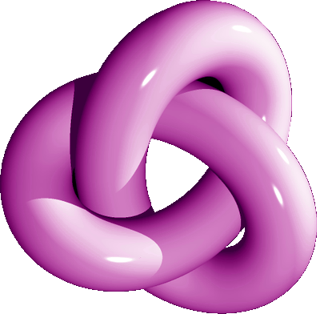
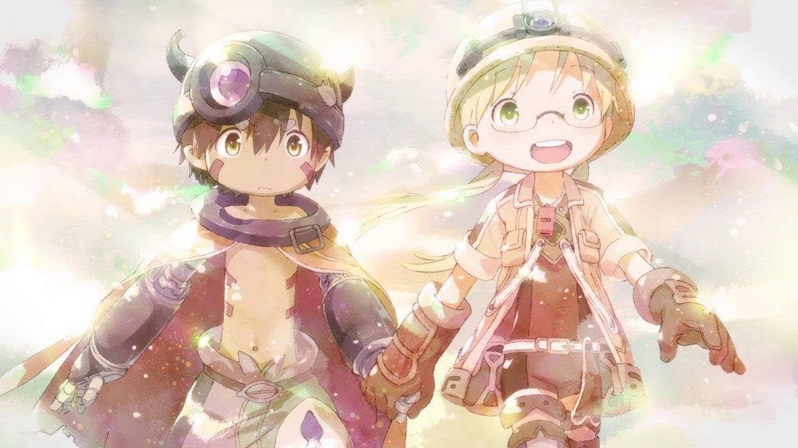
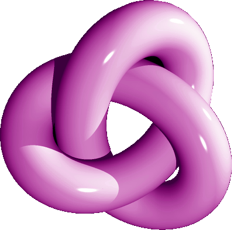
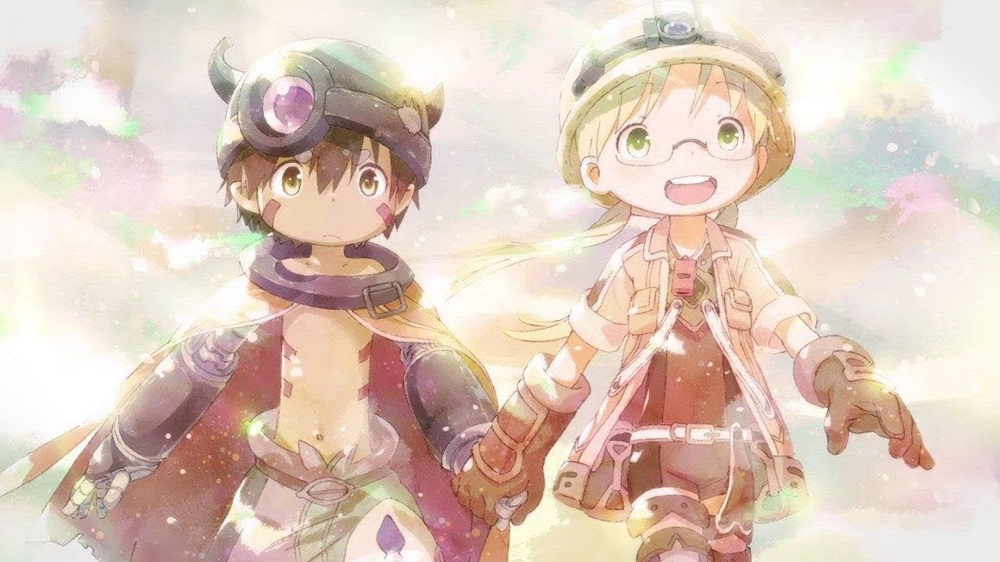

|
|
Hiya World!! I'm Chapl Kazakhs (/^ω^)/☆

 About me...Hewwo!~~ I'm Chapl Kazakhs but you can call me the chap XD (P.S. yea i no my name is pretty randum :P). ZOmG what do i even rite about myself dis is sooo hard >\\< ... w-well first off I'm a devout follower of Islam I guess... (btw im not that devout like i dont pray 5 times a day but my parents made me put this in -_- tho the prophet muhammad (ﷺ ) is my biggest role model evar...) What else... oh yeah I looooove maths! especially algebraic topology XD (and point-set topology too but ppl say thats useless so i wont mention it... wups i already did! trolled u!) achualy I <3 anything EXCEPT p-adic analysis omg I haaate p-adic numbers so much... if I catch u talking about p-adic anything near me I will GLOMP you :3 lol jkjk. Right now I'm studying at the Australian National University (#1 univeristy in australia... tho not as pro as harvard or national singapore university...) and my fav lecturer is DEFinitely Vigleik Angeltveit (or however u spell that roflz). He makes representation theory of finite groups (omg its sooo hard u have no idea~~) so ez to understand its craZ (<-- sry thats how I say crazy lmao... kk ill stop -_-) And what else do I have to say... hmm... oh yea (get ready)... ZOMG I LOOOOOVEEEE ANIME!!!!!~~~ SJDHNSIVUHN(RVVn28vyNH @@@@!!!!! kk ill calm down now :P anywayz if u couldn't tell from my website's background picture already (in which case u must be BLIND) I am a HUGE anime fan! especially Bang Dream and Love Live which are like my favourite anime idol groups... no actually my favourite bands... no actually my fav things EVAR!! You can listen to my favourite song in the audio thingy below(Future Style by love live u's (P.S. i dont know how to type the japanese letter of the band name... its like a u but with a long line on the left...)). Anywayz besides awesome idol groups my fav anime is UNDOBUTEDLY Made in Abyss! The story and art and world design and everything is just sooo awesome and epic... much better than some of the lame slice of life crap that gets made these days!! BTW if ur an employer... go away! JKJK PLS DONT GO AWAY :):):)!!! Click the Math/CS tab on the top navigation thingy... idk what ill put there but probs something related to maths or computer science... u can also check out my other tabs if u want I don't care (actually I do care pls hire me XD). Anywaaayz... yup I think those things describe me pretty well :3 if u cant be bothered reading everything (yea i understand... I'm pretty bad at reading too lolz :P) you can look at the pictures below to see what chapl kazakhs (aka the chap) is all about! °˖✧◝(⁰▿⁰)◜✧˖°  



How to be funnyEveryone has a funny bone inside them! To unlock your inner humour, click here to view Chapl's comprehensive humour development course today, free for a limited time only! Testimonials
Dong Nguyen:
Cormac Hegarty:
Shaun Zhutian Shu: |